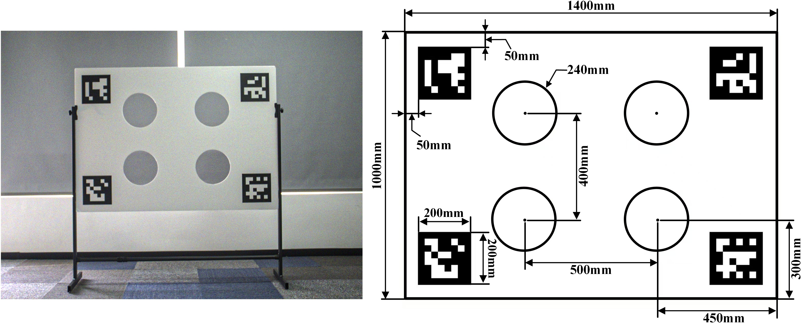
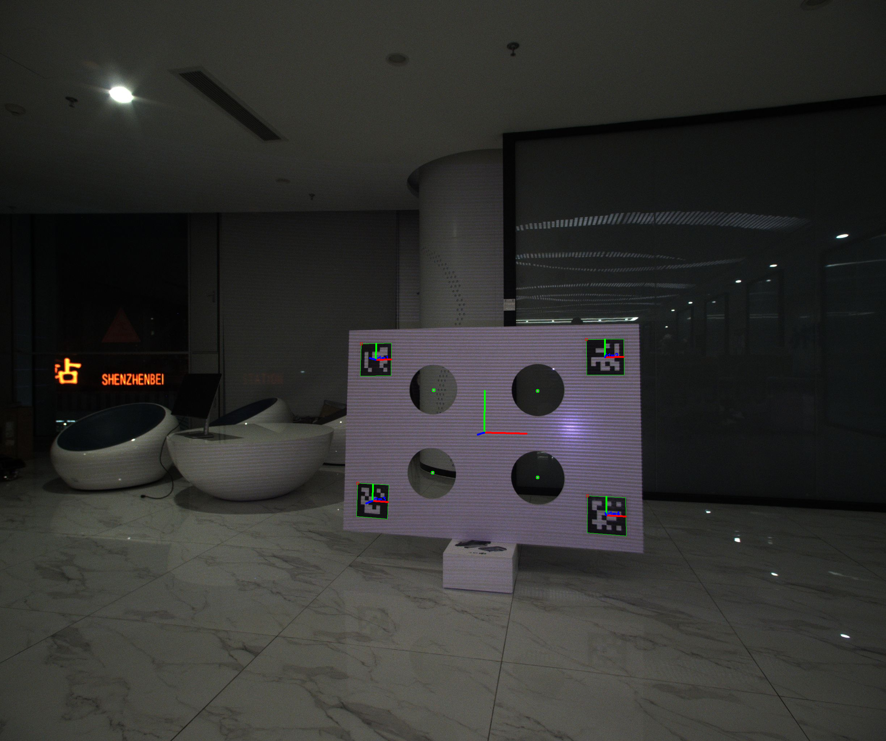
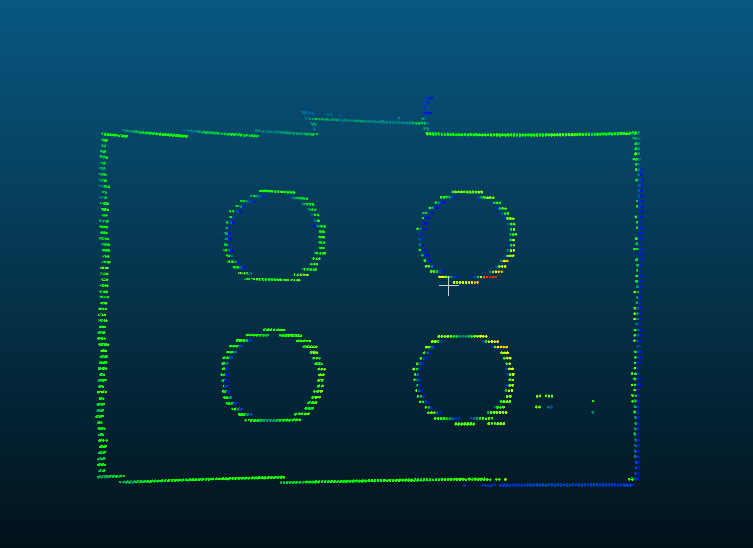
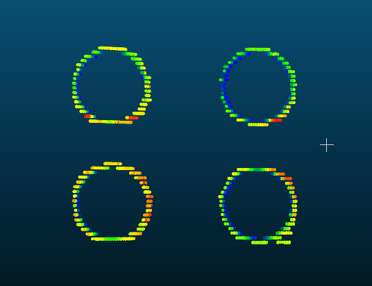
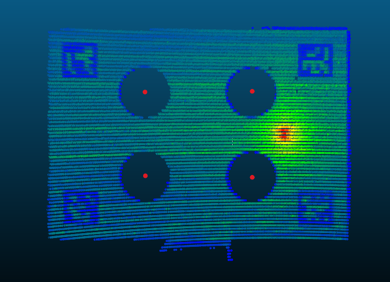
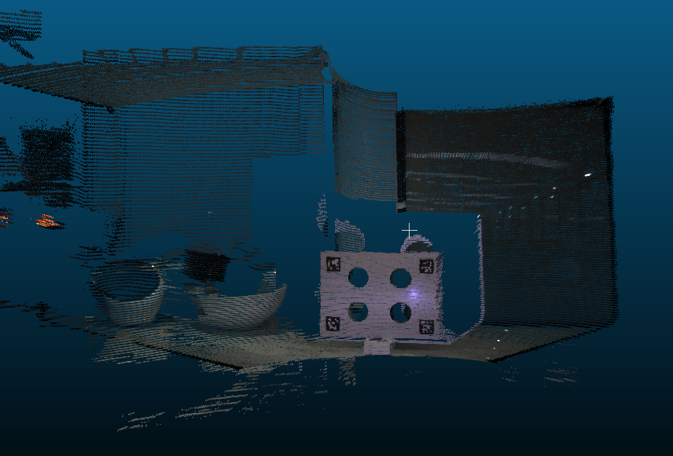
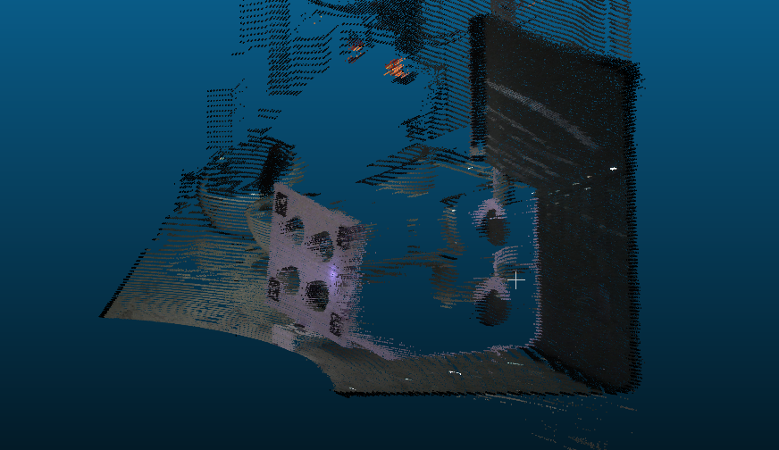

FAST-Calib-01 相机-激光雷达标定详解
FAST-Calib介绍
FAST-Calib 是一个用于相机-激光雷达标定的算法。论文地址：FAST-Calib: LiDAR-Camera Extrinsic Calibration in One Second。从分类来讲，这是属于有标定板的标定方法，同时，标定时只需要利用静态下采集的数据。FAST-Calib使用如下的特制标定板：

(这种标定板应该是在这篇论文：Automatic Extrinsic Calibration Method for LiDAR and Camera Sensor Setups中被提出的，FAST-Calib的主要方法其实也跟这篇论文差不多。最大的改动点其实只是改变了点云的圆孔提取，使其能够使用半固态或固态雷达)
FAST-Calib的算法流程其实非常简单，主要可以概括成下面几个步骤：
- 在点云上，先利用直通滤波扣除标靶的大概位置点云->平面拟合->边缘提取->聚类算法圆孔中心点
- 在图像上，利用ArUCo码检测标靶四个ArUCo码并估计位姿->求平均位姿作为初始位姿->四个ArUCo码一起求解标定板位姿->利用标靶尺寸信息，直接求得圆孔中心点（3D位置）
- 利用点云-图像的圆孔中心点，进行SVD求解相机-激光雷达的位姿
- 如果有多个场景（不同标靶摆放位置），则一起加进来，使用优化求解的方法联合求解相机-激光雷达的位姿
本项目介绍
- FAST-Calib已经开源了代码，其基于ROS实现。为了方便使用，本项目将FAST-Calib的ROS依赖去除，可以直接在非ROS环境下进行编译使用，直接保存标定结果及各种可视化数据。方便各位在业务或者实验室项目中使用。
- 对FAST-Calib算法的各个步骤进行详细说明，介绍一些实际使用中可能遇到的问题。对论文中没有说明的步骤和要求进行补充。主要也是对自己学习FAST-Calib的一个总结。
- 希望能在FAST-Calib基础上，进一步优化算法，提高自动化。
项目Github即总体介绍
项目地址
示例数据
为了方便大家去除ROS使用，项目中已经提前将一个样例数据中的点云文件（.bag）处理成单帧的txt格式，可以直接使用C++读取点云。数据下载地址。目前只处理了Ouster的数据
数据预处理
如果想要自己处理数据，将.bag文件处理成txt格式，可以参考下面的步骤：
文件dev_tools/bag2pcd.py用于将.bag数据转换为pcd点云文件，保存为包含"x"、"y"、"z"、"intensity"、"ring"和"t"四个字段的.txt文件。 该脚本可在ROS Docker容器中运行。您可以从hub.docker.com轻松下载ROS Noetic Docker镜像，或直接使用以下命令拉取：
1 | docker pull ros:noetic |
并使用以下命令启动Docker容器：
1 | docker run -it --rm --name ros_noetic -v /path/to/your/data:/workspace ros:noetic |
将bag2pcd.py文件和原始.bag数据放置于/path/to/your/data路径下，并在Docker中运行以下命令：
1 | source /opt/ros/noetic/setup.bash |
如果不确定.bag文件中的Topic名称，可使用以下命令查看：
1 | python3 bag2pcd.py --bag_file /path/to/your/data/your.bag --pointcloud_topic "" |
项目编译和运行
- 将项目克隆到本地
1 | git@github.com:zeal-up/FAST-Calib_wo_ros.git |
- 编译项目
1 | mkdir build && cd build |
- 使用方法
1 | ./my_fast_calib -cam_intrinsic_file /path/to/data/camera_pinhole.yaml --data_dir /path/to/data --output_dir /path/to/output |
运行结果
部分可视化结果将保存在输出目录中。 可视化结果数据如下所示：
1 | . |
- ArUCo码检测结果

- 点云提取 - 边缘点

- 点云提取 - 圆孔边缘点

- 点云提取 - 圆孔中心点

- 最终可视化结果 - 使用标定结果变换点云，并根据图片着色


后续文章安排
- 点云圆孔中心点提取算法
- 图像圆孔中心点提取算法
- 相机-激光雷达位姿求解算法即多场景下的联合优化求解算法